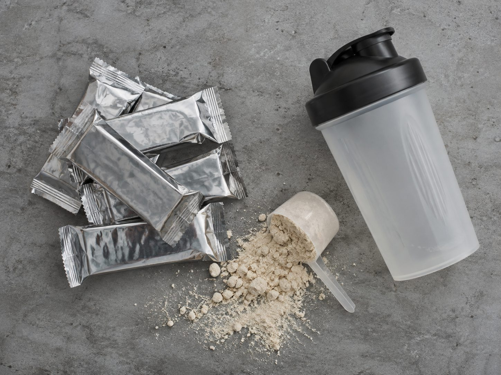
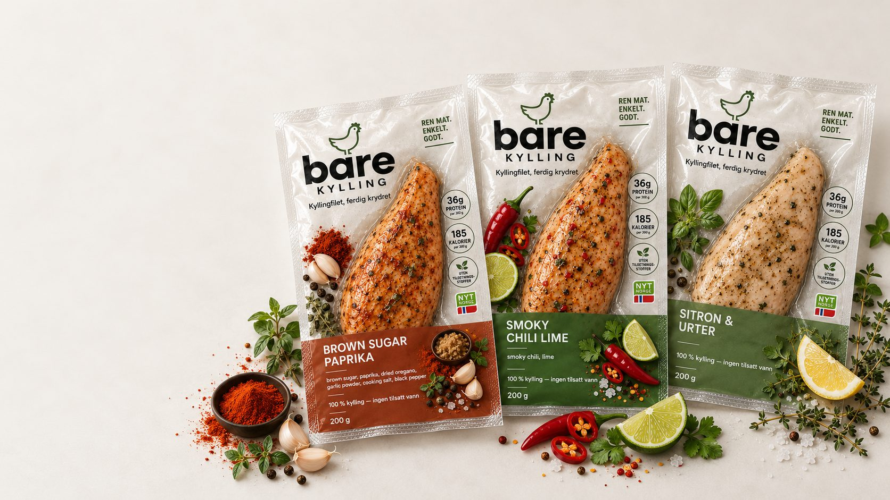
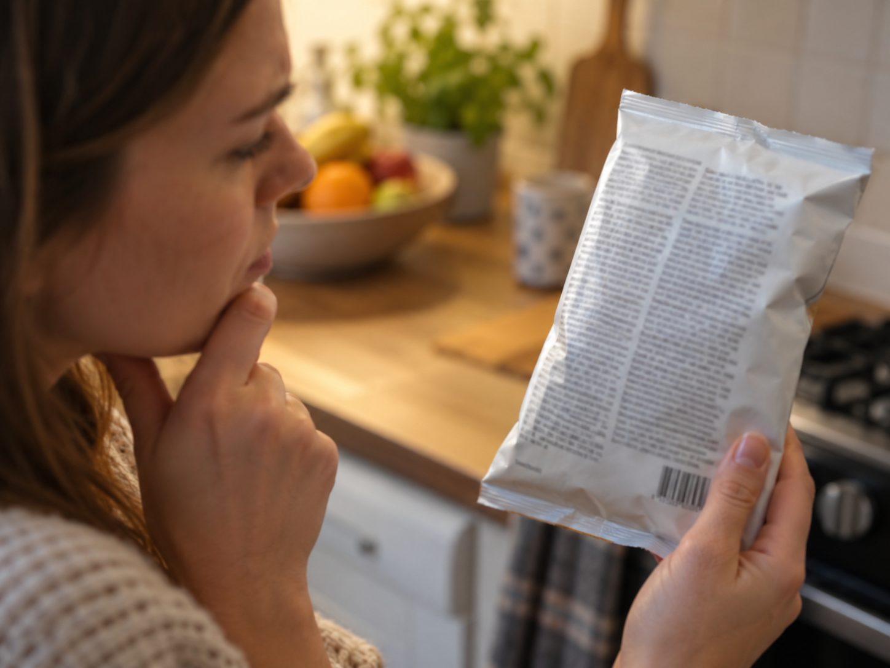
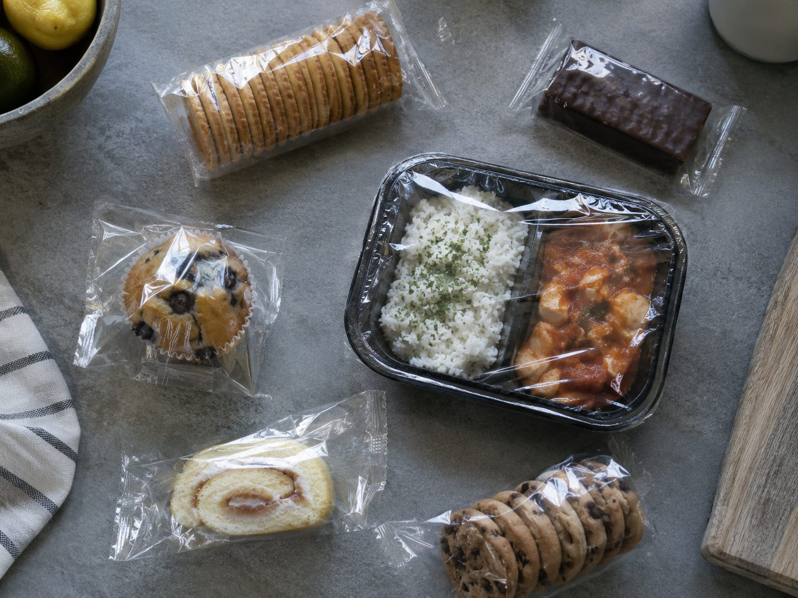
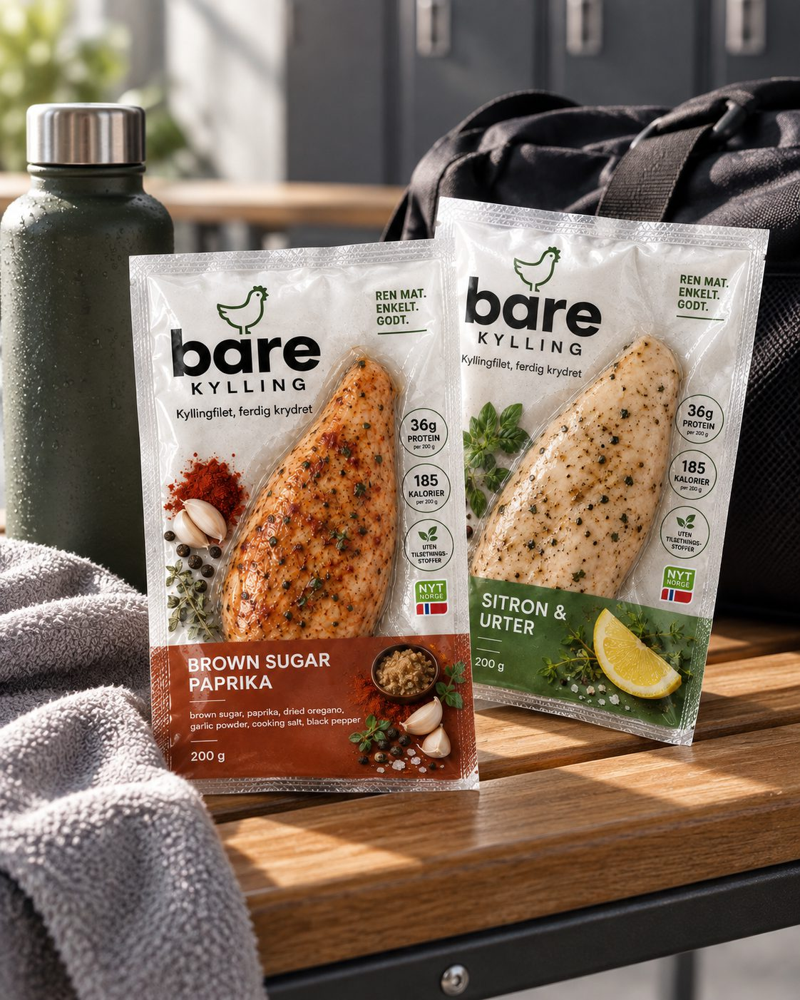
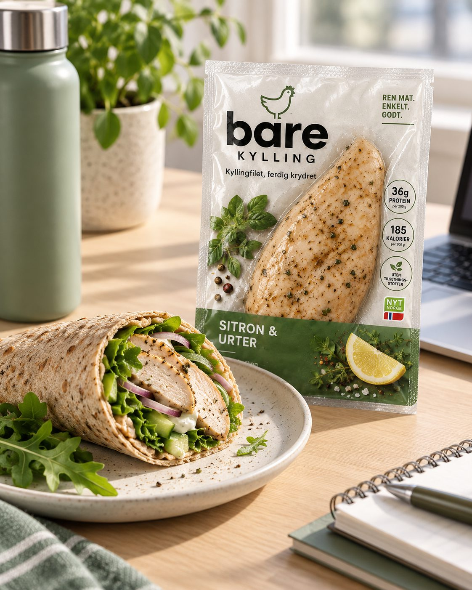
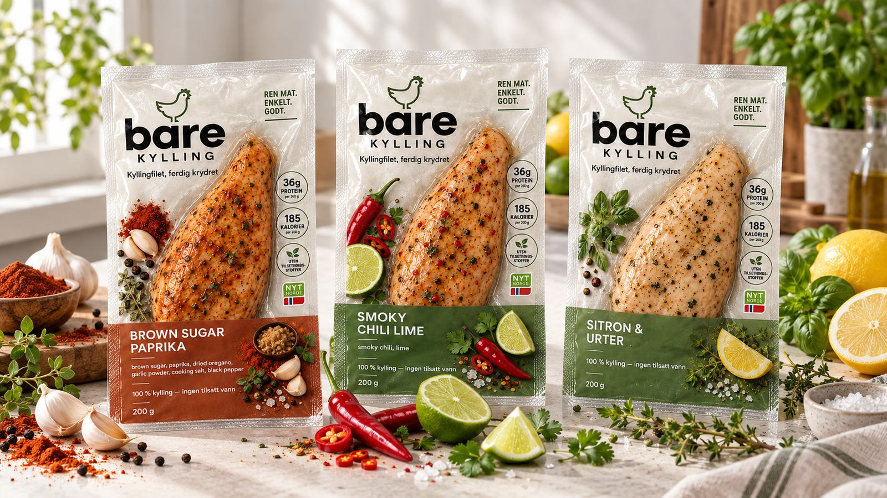

images/lei-ultraprosessert.jpgLei av ultraprosessert mat.
Barer, pulver og shakes som later som de er mat. Protein skal ikke smake som en dessert du ikke ba om.
Ferdigstekt kyllingbryst
Vi var lei av barer, pulver og ingredienslister vi ikke skjønte. Så vi lagde ferdigstekt, ferdig krydret kyllingbryst. Riv opp. Spis.

bare-kylling/images/bare-kylling-pakker.jpg
Legg inn bildet av de tre pakkene her, så bytter det seg ut automatisk.
Bare Kylling. Ferdig stekt. Ferdig krydret. Ordentlig mat. Null stekepanne.
Hvorfor
Ikke av mat. Av alt rundt maten.

images/lei-ultraprosessert.jpgBarer, pulver og shakes som later som de er mat. Protein skal ikke smake som en dessert du ikke ba om.

images/lei-ingrediensliste.jpgIngredienslister du trenger ordbok for å lese. Du skal skjønne hva du spiser – uten å google.

images/lei-mikroplast.jpgVi vil ha mat som er så nær råvaren som mulig. Kylling. Krydder. Ferdig.
Så vi begynte med kylling.
Stekt og krydret før du åpner pakken.
Kyllingbryst. Ikke pulver med smak av kylling.
Tar like liten plass som resten i sekken.
Begge deler er riktig svar.
Jeg er ikke en bar. Jeg er middag.
Slik funker det
Pakken åpnes med én hånd.
Rett fra kjøleskapet, eller et raskt vend i panne eller mikro.
Ingen oppvask. Ingen rester. Ingenting å planlegge.
Det var det.
Zzz. Allerede ferdig.
Når

images/bruk-etter-trening.jpg
images/bruk-wrap.jpg
images/bruk-jobb.jpgVi jobber med første batch. Legg igjen e-posten din, så sier vi fra når kyllingen er klar.
Sett meg på listaDe på lista får vite det først.